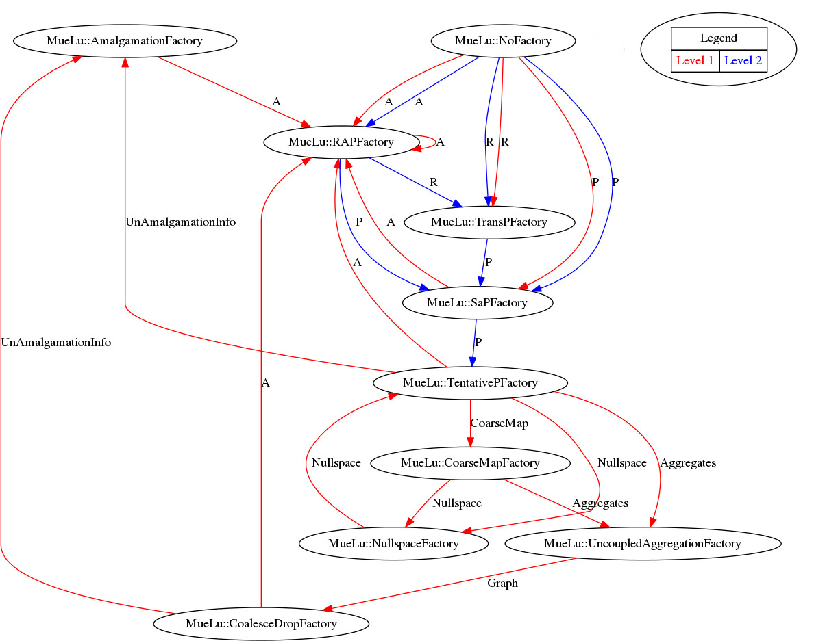
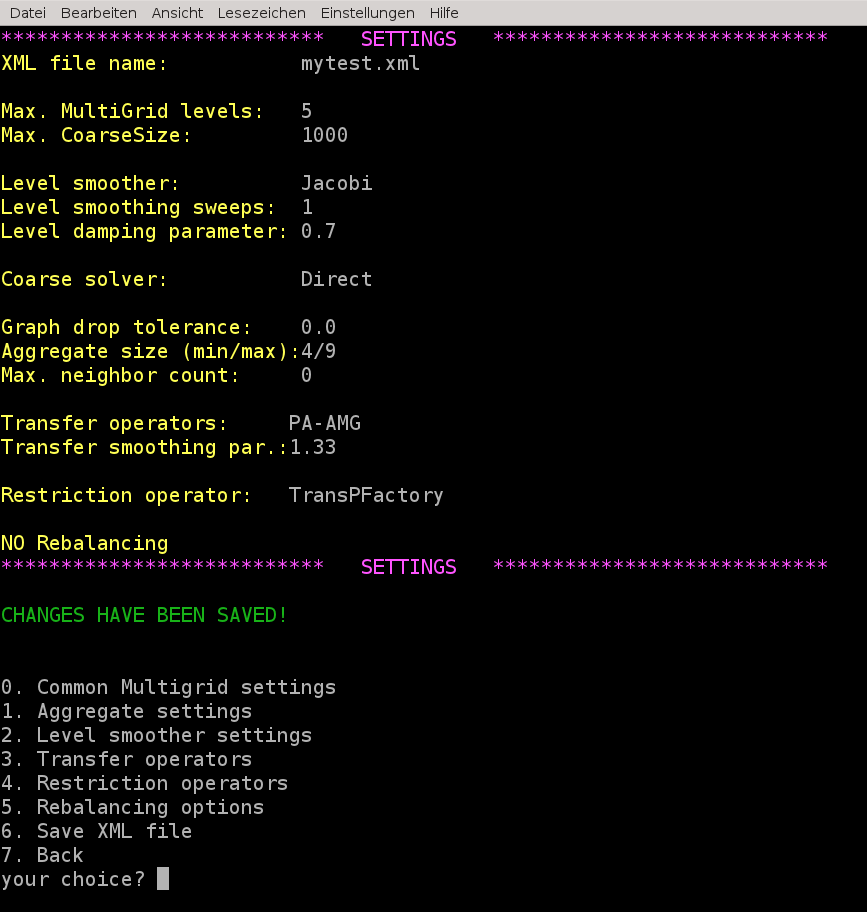

Useful commands and debugging
Export level information
Of course, it is possible to export the multigrid hierarchy in matrix market format similar to Export data when using the advanced XML file format instead of the simple XML format.
To export the multigrid hierarchy one can use, e.g., the following parameters
<ParameterList name="MueLu">
<!-- Factory collection -->
<ParameterList name="Factories">
</ParameterList>
<!-- Definition of the multigrid preconditioner -->
<ParameterList name="Hierarchy">
<Parameter name="max levels" type="int" value="3"/>
<Parameter name="coarse: max size" type="int" value="10"/>
<Parameter name="verbosity" type="string" value="Low"/>
<ParameterList name="All">
</ParameterList>
<ParameterList name="DataToWrite">
<Parameter name="Matrices" type="string" value="{0,1,2}"/>
<Parameter name="Prolongators" type="string" value="{1,2}"/>
<Parameter name="Restrictors" type="string" value="{1,2}"/>
</ParameterList>
</ParameterList>
</ParameterList>
Dependency trees
For debugging it can be extremely helpful to automatically generate the dependency tree of the factories for a given XML file. However, it shall be noticed that even with a graphical dependency tree it might be hard to find the missing links and dependencies without a sufficient understanding of the overall framework.
To write out the dependencies you just have to put in the dependencyOutputLevel parameter. The value gives you the fine level index that you are interested in (e.g., 1 means: print dependencies between level 1 and level 2).
<ParameterList name="MueLu">
<!-- Factory collection -->
<ParameterList name="Factories">
</ParameterList>
<!-- Definition of the multigrid preconditioner -->
<ParameterList name="Hierarchy">
<Parameter name="max levels" type="int" value="3"/>
<Parameter name="coarse: max size" type="int" value="10"/>
<Parameter name="verbosity" type="string" value="Low"/>
<ParameterList name="All">
</ParameterList>
<Parameter name="dependencyOutputLevel" type="int" value="1"/>
</ParameterList>
</ParameterList>
After running the example you should find a file named dep_graph.dot in the current folder which you can transform into a graph using the dot utility from the graphviz package. Run, e.g. the commands
- ::
sed -i ‘s/label=Graph]/label="Graph"]/’ dep_graph.dot sed -i ‘s/\”/”/g’ dep_graph.dot sed -i ‘s/”</</’ dep_graph.dot sed -i ‘s/>”/>/’ dep_graph.dot dot -Tpng dep_graph.dot -o dep_graph.dot.png
in your terminal to obtain the graph as given in Figure Visualization of aggregates using the CoarseningVisualizationFactory..

Fig. 21 Visualization of aggregates using the CoarseningVisualizationFactory.
Note that the red arrows correspond to the fine level (level 1) and the blue arrows correspond to data on the coarse level (level 2).
Note
In case that the file dep_graph.dot is not generated you have to check the prerequisites. To be able to auto-generate the dependency graphs you have to compile MueLu with Boost enabled. Furthermore you have to set the MueLu_ENABLE_Boost_for_real:BOOL = ON defines flag in your configuration script. If these requirements are not fulfilled you should find the error message Dependency graph output requires boost and MueLu_ENABLE_Boost_for_real in the screen output of MueLu.
As one can see from the dependency output there are also some internal factories which have not been visualized in the Figures XML Interface. A good example is the NullspaceFactory which seems to build a dependency cycle with the TentativePFactory. In fact, the NullspaceFactory is a helper factory which allows to use the user-provided near null space vectors as input on the finest level. On the coarser levels it just loops through the generated coarse set of near null space vectors from the TentativePFactory. This is a technical detail which sometimes can cause some problems when the corresponding dependency is not defined properly in the XML file. Another example for a special factory is the NoFactory. This special factory is used for all data which is kept in memory and needed by the level smoothers during the iteration. Usually, the final transfer operators \(P\) and \(R\) as well as the level matrix \(A\) are transformed to NoFactory objects after the setup phase has completed. However, expert users can also use the NoFactory mechanism for special data during the setup phase. But this is not recommended.
Exercise 1
Compare the factory layout in Figure aggregation/figure_simpledesignaggregates with above dependency graph. Try to read it from bottom to top. Which factories are missing in Figure aggregation/figure_simpledesignaggregates? Which variables are missing in Figure aggregation/figure_simpledesignaggregates?
Graphical assistant for XML file generation
The hands-on.py driver script contains a graphical assistant to generate new XML parameter files in the advanced MueLu file format.
Just run the hands-on.py script and choose a problem type from the list. Then choose option 2 to set the xml file. If you enter a filename that does not exist then the assistant is started to generate that new XML file.
{kind=link}

Just go through the menu and make your choices for level smoothers, transfer operators and so on. Do not forget to call option 6 to save the XML file under the given name, that you have entered before. Then you can use option 7 to go back to the main menu for the example problem and try your new preconditioner with your parameter choices.
Note
Of course, we could have introduced this feature with the earlier tutorials, but the idea was to familiarize the user with the XML files.